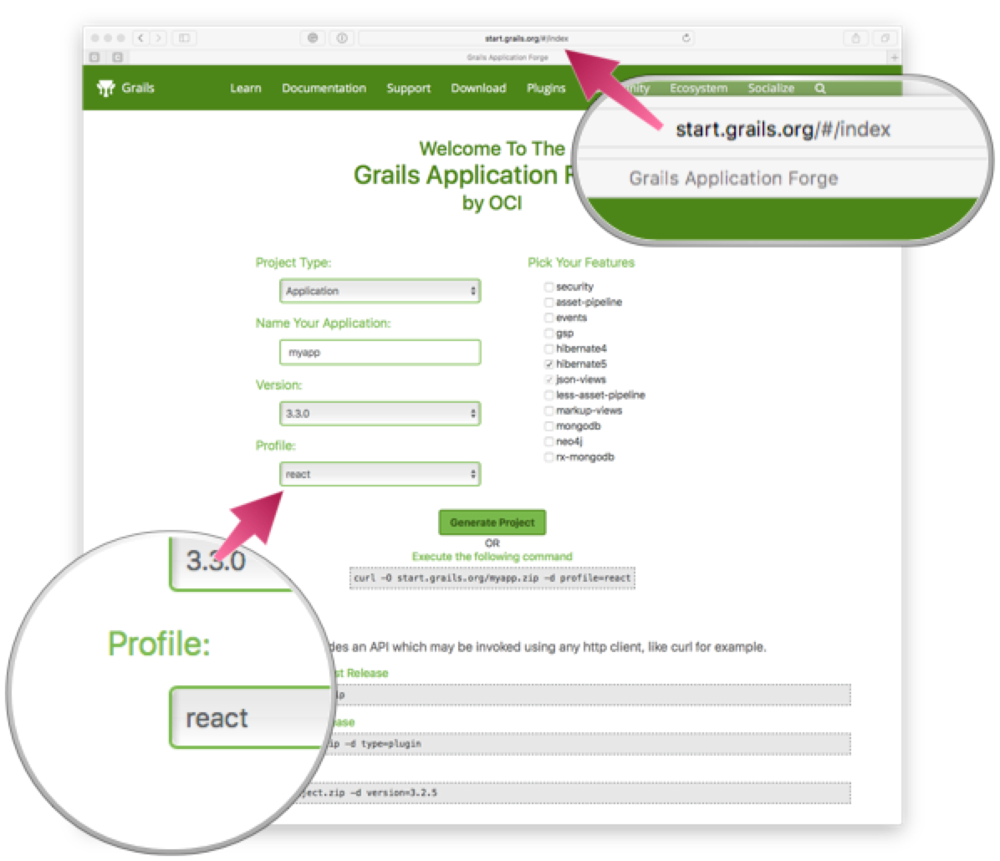

./gradlew server:bootRun1 Introduction
Version: 1.1.1.BUILD-SNAPSHOT
1 Introduction
Grails Profiles encapsulate project commands, templates, and plugins.
To create an application using the react profile you can use the next command:
grails create-app myapp --profile=react
This profile provides a client/server multi-project build structure.
The server Grails app is using the rest-api profile with CORS enabled.
It can be started using grails run-app or using the Gradle wrapper:
The React client app has been built using the create-react-app CLI. It can be started via 'npm start' (in which case you will need to run 'npm install' to install npm dependencies) or using the Gradle wrapper (which will install npm dependencies automatically if needed):
./gradlew client:bootRunThe client app’s build.gradle defines other tasks to test and build the app using react-scripts. Please see create-react-app’s documentation for more information: https://github.com/facebookincubator/create-react-app
To run both client & server projects in parallel, use the Gradle wrapper:
./gradlew bootRun -parallelFor support, please use the Groovy Community Slack or open an issue on Github
Also, you could create a Grails application using the react profile with the Grails Application Forge

Grails Application Forge is a great way to discover the different provided features in the profile.